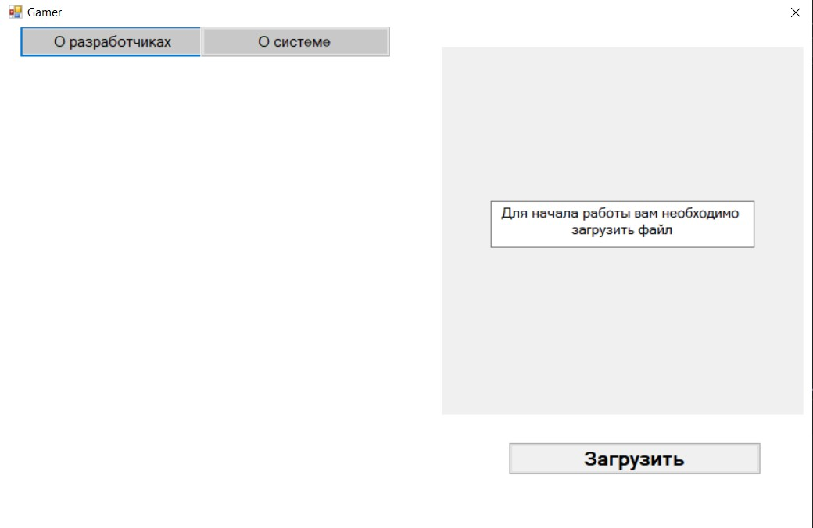

Приложение "Лабиринт"
Сведения о программе
Лабири́нт — структура обычно в двухмерном пространстве, состоящая из запутанных путей к выходу (и/или путей, ведущих в тупик).
Модель лабиринта
Система обладает функциональностью генерации лабиринта при помощи двух алгоритмов, установки входа и выхода в ручном или автоматическом режиме, а также сохранения созданного лабиринта в файл заданного формата. Система позволяет загружать лабиринты из файлов, выбирать их тематическое оформление, проходить лабиринт автоматически с установкой скорости движения и в ручном режиме.
При запуске программы пользователь должен пройти авторизацию в системе. При первом посещении программы следует пройти регистрацию.
В роли администратора

В роли пользователя
Функции системы
Инструкция по использованию разработчикам
Взаимодействие с лабиринтом осуществляется с помощью мыши и клавиатуры.
- Для создания лабиринта администратор должен указать его размеры (ширину и высоту) и подтвердить действие кнопкой «ОК».
- Предоставляется способ расстановки расстановки: автоматический и ручной
- Предоставляется выбор темы лабиринта и алгоритм генерации лабиринта
- После выполнения всех перечисленных пунктов после нажатия кнопки «Сгенерировать» в окошке справа отображается лабиринт с заданными параметрами
- Администратор может повторно нажать кнопку «Сгенерировать» для получения другого результата или нажать кнопку «Сохранить» для того, что оставить этот вариант лабиринта у себя в системе в файле формата *.xml, задав имя и адрес сохранения.

Инструкция по использованию пользователям
Взаимодействие с лабиринтом осуществляется с помощью мыши и клавиатуры.
- Для начала работы нужно загрузить лабиринт из файла, нажав кнопку «Загрузить» и выбрав соответствующий файл.
- Успешная загрузка отображает лабиринт в специальном окне
- Предоставляется возможность выбрать тему оформления и способ прохождения лабиринта: ручной или автоматический.
- В ручном режиме достаточно нажать кнопку «Пройти» для старта игры; управление осуществляется клавишами-стрелками на клавиатуре. В автоматическом режиме пользователь может настроить параметры игры: выбрать алгоритм и скорость прохождения.
- Для подтверждения выбора всех настроек и запуска игры необходимо нажать кнопку «Пройти». При прохождении лабиринта настройки параметров игры скрываются от игрока.
- Пользователь в любой момент может повторно нажать кнопку «Загрузить» и выбрать другой файл.